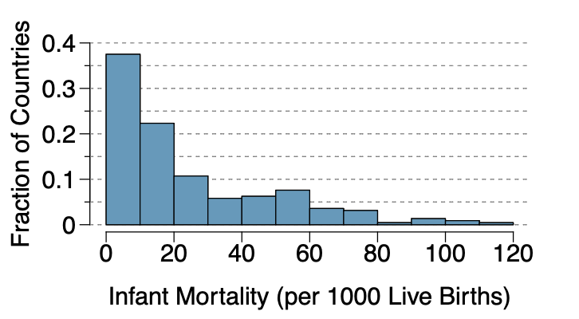
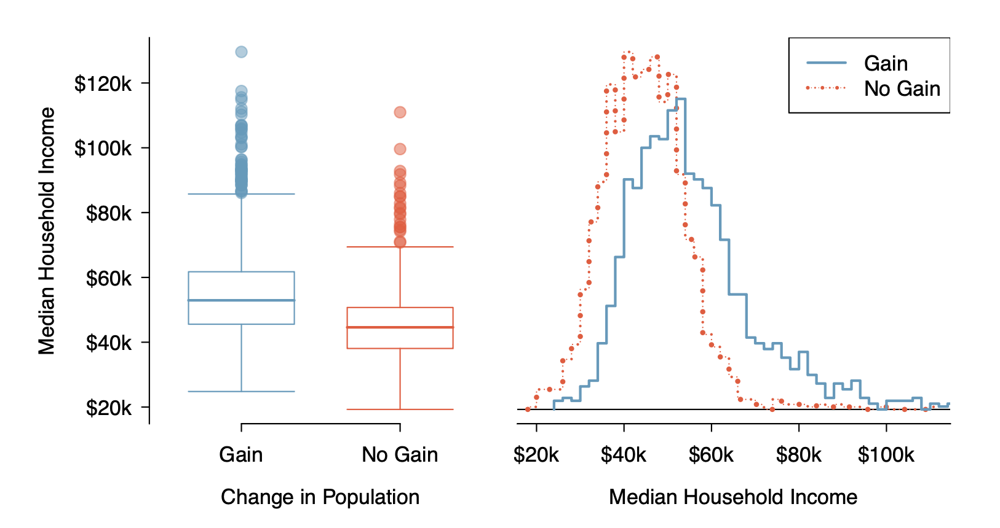

PSTAT 5A Practice Worksheet 2
Descriptive Statistics
1 Instructions and Overview
⏰ Time Allocation: - Section A (Warm-up): 15 minutes
Section B (Intermediate): 25 minutes
Section C (Wrap-Up): 10 minutes
Total: 50 minutes
📝 Important Instructions:
Use the formulas provided for guidance
Round final answers to 4 decimal places unless otherwise specified
Identify your approach before calculating
Use calculator as needed
📚 Key Formulas Reference:
DESCRIPTIVE STATISTICS:
1. Mean Formulas:
Sample Mean: \(\bar x = \frac{\sum x_i}{n}\)
Population Mean: \(\mu = \frac{\sum x_i}{N}\)
2. Variance Formulas:
Population Variance: \(\sigma^2 = \frac{\sum_{i=1}^{N} (x_i - \mu)^2}{N}\)
Sample Variance: \(s^2 = \frac{\sum_{i=1}^{n} (x_i - \bar{x})^2}{n-1}\)
3. Standard Deviations Formulas:
Sample Standard Deviation: \(s = \sqrt \frac{\sum (x_i - \bar x)^2}{(n-1)}\)
Population Standard Deviation: \(\sigma = \sqrt \frac{\sum (x_i - \mu)^2}{N}\)
MEASURES OF POSITION:
Percentile: Value below which a certain percentage of data falls
Quartiles: Q1 (25th percentile), Q2 = Median (50th percentile), Q3 (75th percentile)
Interquartile Range (IQR): Q3 - Q1
Range: Maximum - Minimum
DISTRIBUTION SHAPES:
Symmetric: Mean ≈ Median
Right-skewed: Mean > Median (tail extends to the right)
Left-skewed: Mean < Median (tail extends to the left)
Outliers affect the mean more than the median
2 Section A: Basic Descriptive Statistics
⏱️ Estimated time: 15 minutes
Problem A1: Mean and Standard Deviation
In a class of 25 students, 24 of them took an exam in class and 1 student took a make-up exam the following day. The professor graded the first batch of 24 exams and found an average score of 74 points with a standard deviation of 8.9 points. The student who took the make-up the following day scored 64 points on the exam.
- Does the new student’s score increase or decrease the average score?
- What is the new average?
- Does the new student’s score increase or decrease the standard deviation of the scores?
Answer:
Problem A2: Distribution Shape Analysis
Students in an AP Statistics class were asked how many hours of television they watch per week (including online streaming). This sample yielded an average of 4.71 hours, with a standard deviation of 4.18 hours. Is the distribution of number of hours students watch television weekly symmetric? If not, what shape would you expect this distribution to have? Explain your reasoning
Answer:
3 Section B: Data Interpretation and Graphical Analysis
⏱️ Estimated time: 25 minutes
Problem B1: Interpreting Histograms
The infant mortality rate is defined as the number of infant deaths per 1,000 live births. This rate is often used as an indicator of the level of health in a country. The relative frequency histogram below shows the distribution of estimated infant death rates for 224 countries for which such data were available in 2014.
- Estimate Q1, the median, and Q3 from the histogram.
- Would you expect the mean of this data set to be smaller or larger than the median? Explain your reasoning.

Answer:
Problem B2: Comparing Distributions
Use the plots in the Figure below to compare the incomes for counties across the two groups. What do you notice about the approximate center of each group? What do you notice about the variability between groups? Is the shape relatively consistent between groups? How many prominent modes are there for each group?

Answer:
4 Section C : Variance Calculations Practice
⏱️ Estimated time: 10 minutes
4.1 Understanding Variance: Population vs Sample
🎯 Key Variance Concepts:
Population Variance (when you have ALL data): \[\sigma^2 = \frac{\sum_{i=1}^{N} (x_i - \mu)^2}{N}\]
Sample Variance (when you have a sample): \[s^2 = \frac{\sum_{i=1}^{n} (x_i - \bar{x})^2}{n-1}\]
Why (n-1)? Using the sample mean to estimate deviations “uses up” one degree of freedom.
Problem C1: Basic Variance Calculations
The following data represents the number of customer complaints per day for a small business over 8 days:
Data: 3, 7, 2, 8, 5, 6, 4, 9
Part (a) : Calculate the sample mean \(\bar{x}\).
Part (b) : Calculate the sample variance \(s^2\) using the formula with \((n-1)\) in the denominator.
Part (c) : Calculate the sample standard deviation \(s\).
Part (d) : If this were treated as a complete population, what would the population variance \(\sigma^2\) be?
Part (e) : Explain why we divide by \((n-1)\) for sample variance instead of \(n\).
Answer:
Problem C2: Comparing Variability
Consider two data sets:
Set A: 10, 12, 14, 16, 18
Set B: 5, 10, 14, 18, 23
- Calculate the mean for each set.
- Calculate the sample variance for each set.
- Which set has greater variability?
- Calculate the coefficient of variation \((CV = s/x̄)\) for each set. Which has greater relative variability?
Answer:
PSTAT 5A Practice Worksheet 2 – PSTAT5A PSTAT 5A Practice Worksheet 2 – PSTAT5A PSTAT 5A Practice Worksheet 2 – PSTAT5A PSTAT5A Descriptive Statistics Descriptive Statistics